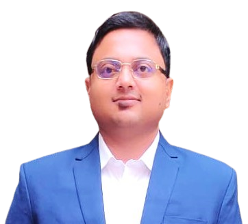

"Live and let live, do not judge, take life as it comes and deal with it, everything will be okay."
About
नमस्कार! I am Vyom Sharma , originally from Agra, Uttar Pradesh, India. I am an Assistant Professor in the Department of Mechanical, Materials and Aerospace Engineering at the Indian Institute of Technology Dharwad (IIT-Dh) in Karnataka, India. I earned my Ph.D. in 2021 from the Mechanical Engineering Department at the Indian Institute of Technology Kanpur (IIT-Kanpur) in Uttarpradesh, India.

Academics:
- Ph.D.: Department of Mechanical Engineering, IIT Kanpur, Uttar Pradesh, India.
- M Tech.: Department of Mechanical Engineering, IIT Kanpur, Uttar Pradesh, India.
- B Tech: Jaypee University of Engineering and Technology, Guna, Madhya Pradesh, India-473226
- Office: A1-128, Academic Block-1, IIT Dharwad
- Email: vyom@iitdh.ac.in, vyom.091648.bme@gmail.com
- Landline: 1085
New Highlights and Announcements
Publications
Refereed Journal Articles
- Sharma, V. and Chandraprakash C. Fabrication and bandgaps of microscale metallic phononic crystals, Under review in International Journal of Advances in Engineering Sciences and Applied Mathematics (2023).
- Sharma, V., Kumar, N., Ramkumar. J., Singh. A., and Jegaraj. J. A novel method for selective boring of thin-walled tubes using electrochemical micromachining. Accepted in Journal of Manufacturing Processes (2023).
- Sharma, V. and Chandraprakash C. Quasi-superhydrophobic microscale two-dimensional phononic crystals of stainless steel 304, Journal of Applied Physics, 131 (18), 184901 (2022). https://doi.org/10.1063/5.0079375
- Sharma, V., Gyanprakash, M., Gupta, P., and Ramkumar, J. Analysis of circuit current in electrochemical micromachining process under the application of different waveforms of pulsed voltage, Journal of Manufacturing Processes, 75, 110–124 (2021).
- Sharma, V., Patel, D.S., Gyanprakash, M., and Ramkumar, J. On altering the wetting behaviour and corrosion resistance of a large metallic surface area by wire electrochemical texturing, Surface and Coatings Technology, 422, p.127533 (2021).
- Sharma, V., Patel, D.S., Agrawal, V., Jain, V.K. and Ramkumar, J. Investigations into machining accuracy and quality in wire electrochemical micromachining under sinusoidal and triangular voltage pulse condition, Journal of Manufacturing Processes, 62, 348–367 (2021).
- Patel, D.S., Sharma, V., Jain, V.K. and Ramkumar, J. Sustainable Electrochemical Micromachining Using Atomized Electrolyte Flushing, Journal of The Electrochemical Society, 168 (4), p.043504 (2021).
- Sharma, V., Patel, D.S., Jain, V.K. and Ramkumar, J. Wire electrochemical micromachining: An overview, International Journal of Machine Tools and Manufacture, 155 , p103579 (2020).
- Patel, D.S., Sharma, V., Jain, V.K. and Ramkumar, J. Reducing overcut in electrochemical micromachining process by altering the energy of voltage pulse using sinusoidal and triangular waveform, International Journal of Machine Tools and Manufacture, 151, p103526 (2020).
- Sharma, V., Srivastava, I., Jain, V.K. and Ramkumar, J. Modelling of wire electrochemical micromachining (Wire-ECMM) process for anode shape prediction using finite element method, Electrochimica Acta, 312 , 329–341 (2019).
- Tyagi, A., Sharma, V., Patel, D.S., Jain, V.K. and Ramkumar, J. Experimental and analytical investigations into wire electrochemical micro turning, Journal of Micromanufacturing, 2 (1) , 42–58 (2019).
- Sharma, V., Patel, D.S., Jain, V.K., Ramkumar, J. and Tyagi, A. Wire electrochemical threading: a technique for fabricating macro/micro thread profiles, Journal of the Electrochemical Society, 165 (9) , p.E397 (2018).
- Sharma, V., Srivastava, I., Tyagi, A., Jain, V.K. and Ramkumar, J. Theoretical and experimental investigations into wire electrochemical turning (wire-ECTrg) process using finite element method, Journal of The Electrochemical Society, 165 (14) , p.E773 (2018).
- Tyagi, A., Sharma, V., Jain, V.K. and Ramkumar, J. Investigations into side gap in wire electrochemical micromachining (wire-ECMM), The International Journal of Advanced Manufacturing Technology, 94 (9) , 4469–4478 (2018).
Refereed Conference
- Sharma, V. and Chandraprakash, C. Fabrication of microscale metallic phononic crystals using wire electric discharge micromachining process, 12th International Conference on Precision, Micro, Meso and Nano Engineering (COPEN 12), Indian Institute of Technology Kanpur (December 2022).
- Sharma, V. and Chandraprakash, C. On the fabrication and analysis of microscale metallic phononic crystals using wire electrochemical micromachining, 5th Indian Conference On Applied Mechanics (INCAM 2022), National Institute of Technology Jamshedpur (November 2022).
- Patel, D.S., Sharma, V., and Kale, A. On micro-pillar generation by through-mask electrochemical micromachining using a flexible electrode, 18th International Symposium of Electrochemical Machining Technology (INSECT), The University of Tokyo, Hongo-Campus, Japan (December 2022).
- Patel, D.S., Sharma, Y., Sharma, V., and Agrawal, V. Atomised electrolyte based electrochemical micro-machining (AE-ECMM) for sustainable manufacturing, 17th International Symposium of Electrochemical Machining Technology (INSECT), KU Leuven, Leuven, Belgium (December 2022).
- Sharma, V., Gupta, P., and Ramkumar, J. On simulating the Faradaic and Capacitive currents during Electrochemical Machining, 8th International and 29th All India Manufacturing Technology, Design and Research Conference (AIMTDR), PSG College of Technology and PSG Institute of Technology and Applied Research, Coimbatore, India (December 2021).
- Sharma, V., Patel, D.S., Ramkumar, J., and Jain, V.K. Wire electrochemical turning: A novel approach for the machining of cylindrical surfaces, 15th International Symposium of Electrochemical Machining Technology (INSECT), Saarland University, Saarbrucken, Germany (November 2019).
- Patel, D.S., Sharma, V., Ramkumar, J., and Jain, V.K. Enhancing dimensional accuracy of electrochemical micro texturing process using triangular pulsed voltage, 15th International Symposium of Electrochemical Machining Technology (INSECT), Saarland University, Saarbrucken, Germany (November 2019).
- Srivastava, I., Sharma, V., Srivastava, V., and Ramkumar, J. On the prediction of anode profile in Wire-Electrochemical Micromachining (Wire-ECMM) using Artificial Neural Network (ANN), World Congress on Micro and Nano Manufacturing (WCMNM), The Sheraton Raleigh Hotel, Raleigh, USA (October 2019).
- Thalkar, M., Patel, D.S., Sharma, V., Ramkumar, J., and Jain, V.K. Fabrication and analysis of sharklet patterns through multi-electrodes electrochemical micro-machining, 10th International Conference on Precision, Meso, Micro Nano Engineering (COPEN 10), Indian Institute of Technology Indore, India (December 2019).
- Sharma, V., Jain, V.K., and Ramkumar, J. Experimental Analysis of Wire-Electrochemical Machining Process, 6th International & 27th All India Manufacturing Technology, Design and Research Conference (AIMTDR), College of Engineering, Pune, India (December 2016).
Book Chapters
- Sharma, V., Patel, D.S. Wire Electrochemical Micromachining Process, Advance Machining Processes (AMPs), Taylor & Francis, CRC Press, (ISBN: 9781482211092) 2022.
- Sharma, V., Patel, D.S. Electrochemical Machining Process, Advance Machining Processes (AMPs), Taylor & Francis, CRC Press, (ISBN: 9781482211092) 2022.
- Sharma, V., Singh, M., and Ramkumar, J. Electrochemical Spark Machining Process, Hybrid Electrical Discharge Machining: Fundamentals and Applications Taylor & Francis, CRC Press, (ISBN: 9781003202301) 2021.
- Singh, M., Sharma, V., and Ramkumar, J. Magnetic Field Assistance in the EDM Process, Hybrid Electrical Discharge Machining: Fundamentals and Applications Taylor & Francis, CRC Press, (ISBN: 9781003202301) 2021.
- Sharma, V., Jain, V.K., Ramkumar, J. Experimental Analysis of Wire-Electrochemical Machining Process, Advances in Unconventional Machining and Composites, Springer Singapore, (ISBN: 9789813294714) 2020.
Text Books
- Ramkumar, J., Sharma, V., Singh, M., Singh, A. Unconventional Machining Processes: Fundamental Principles and Recent Developments, CBS publishers, (ISBN: 9789354664663) 2023.
Thesis
- A Study on the Process Fundamentals and Improvements in Wire Electrochemical Micromachining & its Application in Large Surface Area Texturing (Awarded: December 2021)
Teaching
- Database Management & Information Systems (Theory) (Aug 2024- Nov 2024)
- Database Management & Information Systems (Lab) (Aug 2024- Nov 2024)
- Compilers (CS 323) (Jan-May 2024)
- Compilers Lab (CS 316) (Jan-May 2024)
Students
Ph.D.
- Amit Kumar (2023-) [Topic:]
MTP
- Dushyant (2024) [Topic:]
BTP and R&D
Projects
1.
Invited Talks
- Lecture on ”Wire-ECM: A novel process” in the KARYASHALA organized by the DST, Govt. of India, at the Indian Institute of Technology Kanpur, from 5th December to 15th December 2022.
- Lecture on “Fundamental insights into ECMM” in the KARYASHALA organized by the DST, Govt. of India, at the Indian Institute of Technology Kanpur, from 5th December to 15th December 2022.
- Lecture on ‘Simulation in CAD software’, organized by the Ordinance Factory Board, Government of India, Kanpur in August 2021.
- Lecture on ‘Point of care diagnosis in India’ in AICTE Internship program for Jammu & Kashmir students, August 2022.
- Lecture on ‘Lab-on-chip: Point of care diagnosis’ in AICTE Internship program for Jammu & Kashmir students, March 2022.